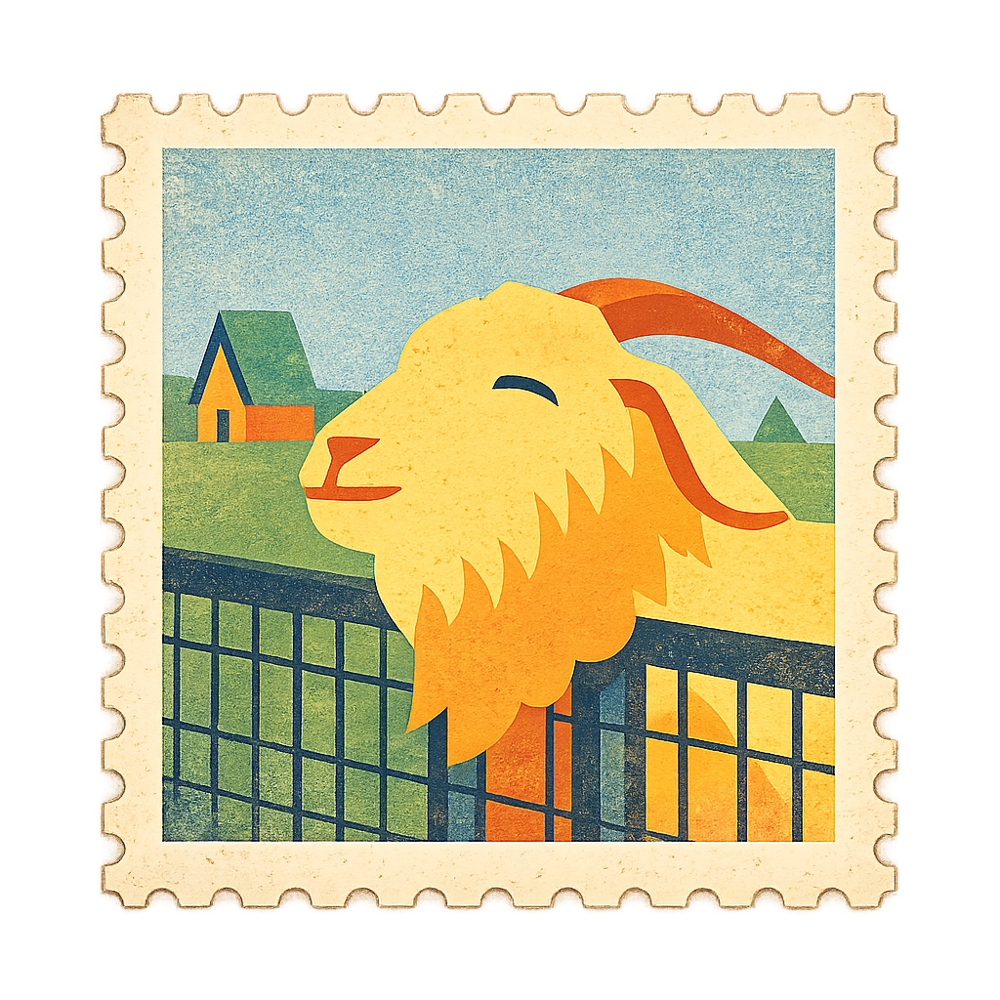
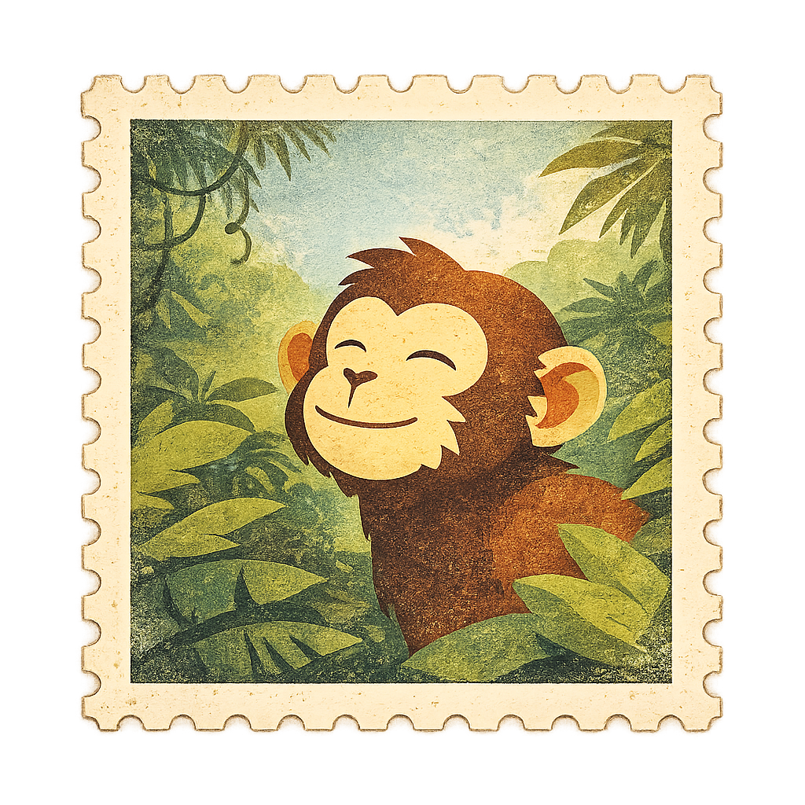
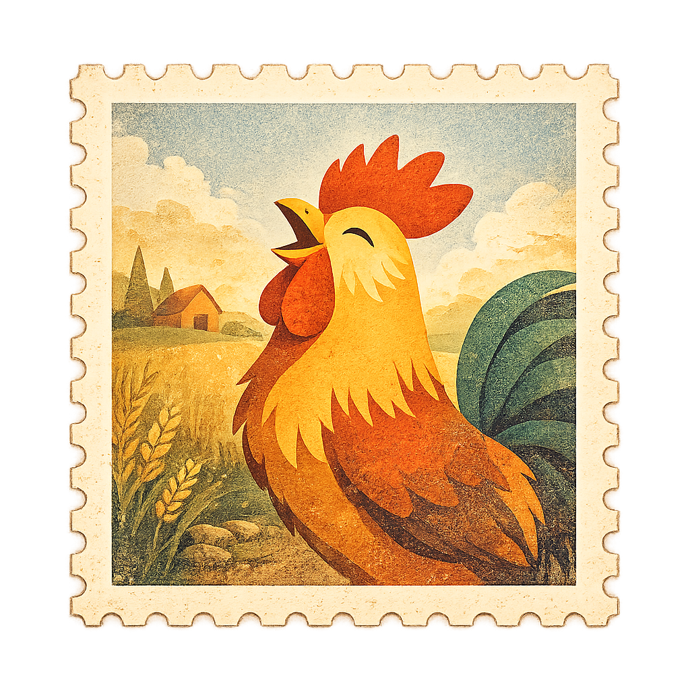
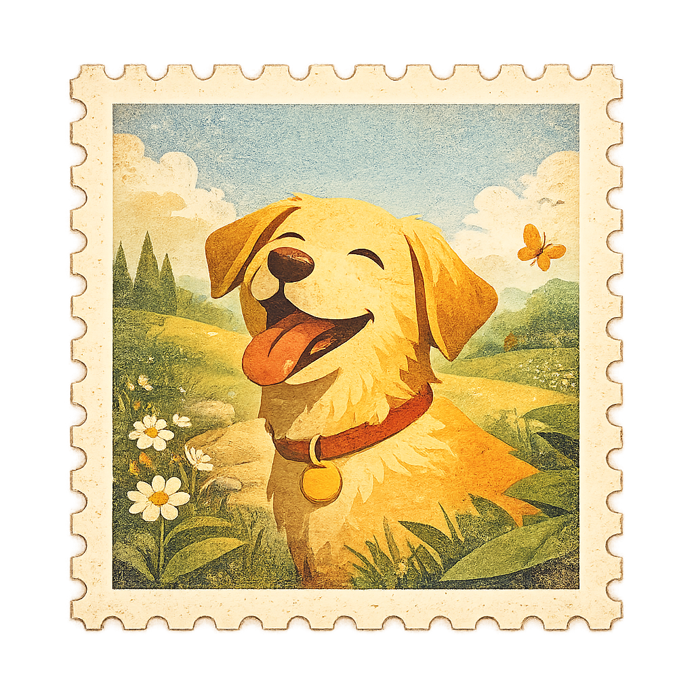
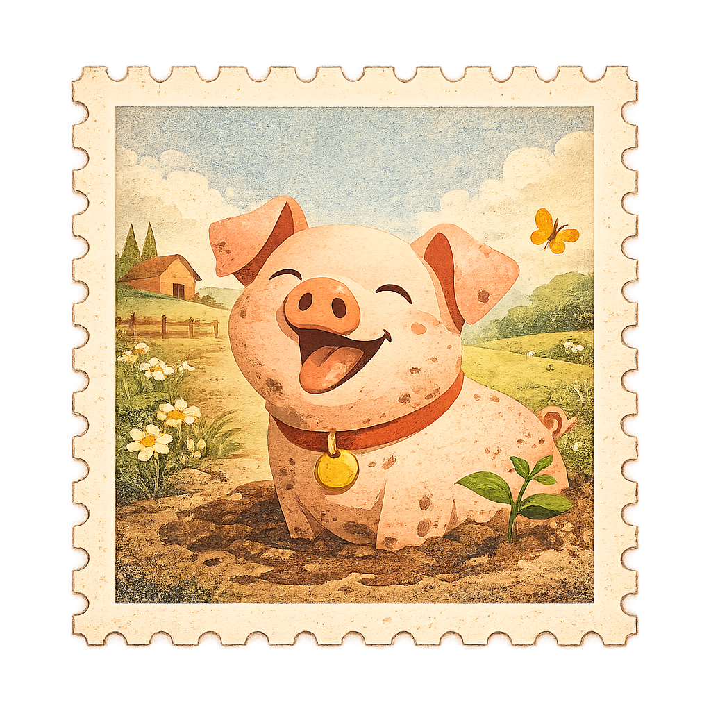
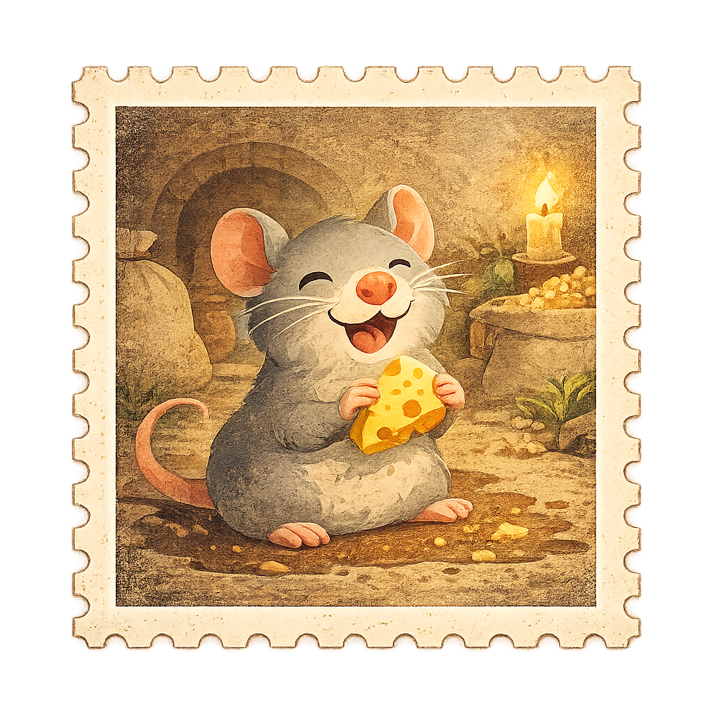
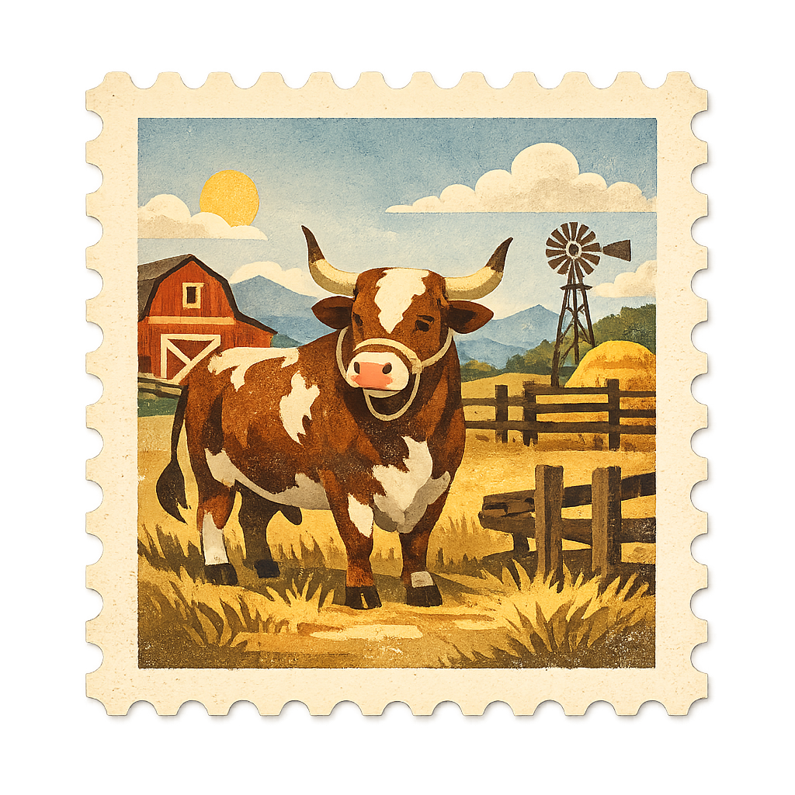
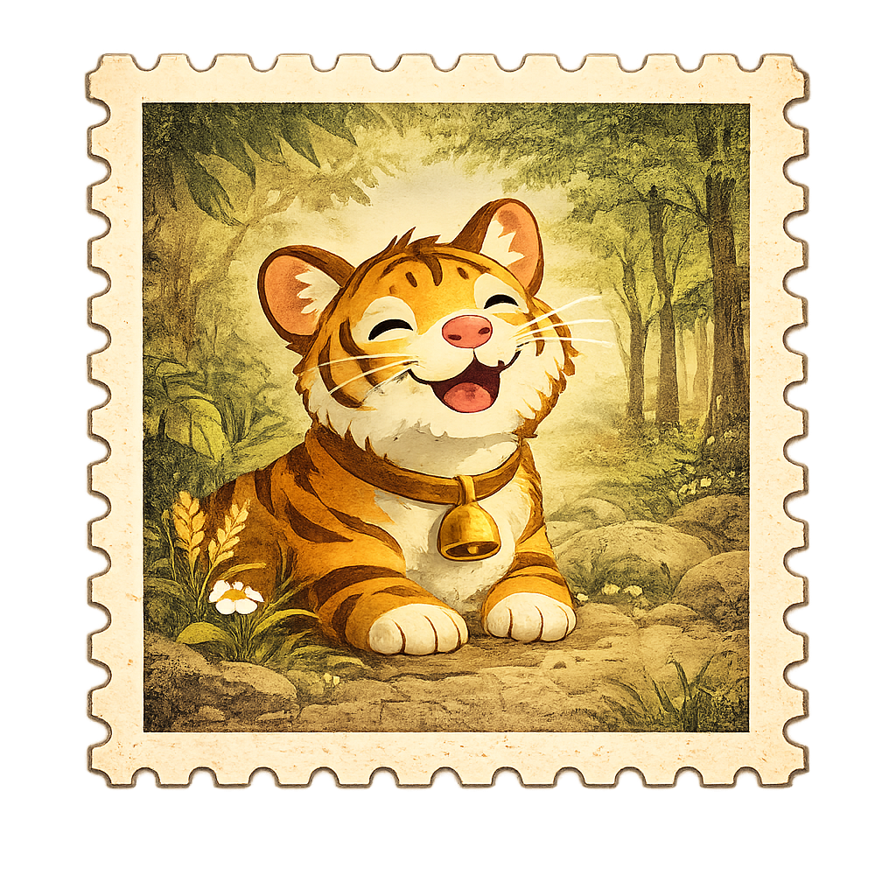
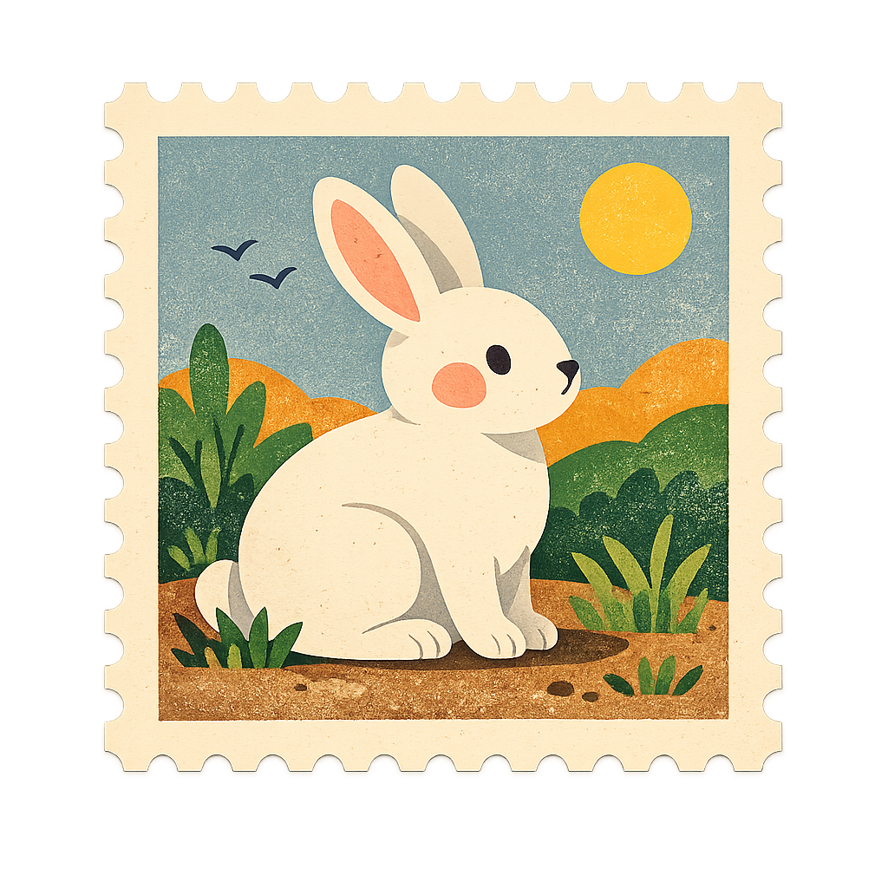
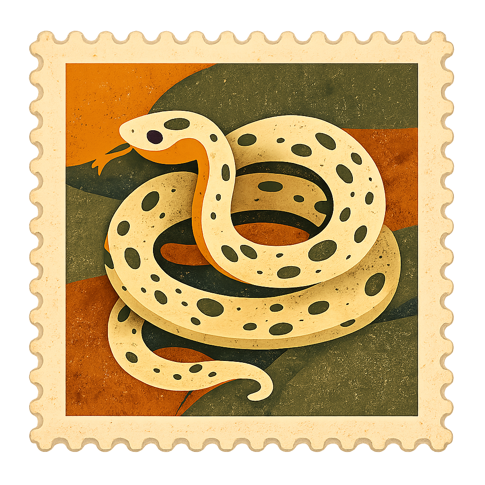

Vol. XII, No. 7Year of the Horse, 2026Price: 1 Lucky Coin
The Zodiac Gazette
A Chronicle of the Celestial Cycle — Published Once Every Twelve Years
Tuesday, February 17, 2026歲次丙午 • Year of the Fire HorseChinese Lunar New Year Edition
The Year of the Horse: From 2014 to 2026
A Twelve-Year Journey Through the Chinese Zodiac, From One Horse Year to the Next
Twelve years have passed since the Horse last galloped across the celestial stage. In the ancient Chinese zodiac, a complete cycle of twelve animals must parade through the heavens before any sign returns. The year 2014 saw the last Year of the Horse — a time of energy, passion, and unbridled ambition. Now, as we stand at the threshold of 2026, the Horse prepares to return, having waited patiently through the reigns of Goat, Monkey, Rooster, Dog, Pig, Rat, Ox, Tiger, Rabbit, Dragon, and Snake. Each year carried its own character, its own wisdom, its own story. Here we chronicle that grand procession, one sign at a time, as told through the pages of this gazette.
2026 — Year of the Fire Horse
丙午年 • The Seventh Sign Gallops Home
After twelve long years, the Horse gallops back to the celestial stage with unmatched vigour and spirit. The Year of the Fire Horse is the most dynamic of all Horse years — a combustion of passion, independence, and irrepressible energy. Those born under the Horse sign are known for their warmth, their love of freedom, and their ability to inspire those around them.
The Fire element adds intensity and charisma to the Horse's already spirited nature. This is a year for bold action, for pursuing dreams long deferred, and for running toward the horizon with full confidence. The Horse does not tiptoe — it charges. As we welcome 2026, let us embrace that fearless gallop and ride into whatever adventures await.
馬 年
The Twelve-Year Chronicle • 2014 – 2025
2014 — Year of the Wood Horse • 馬
The Seventh Sign Sets the Stage for a Twelve-Year Journey
The last Year of the Horse blazed with energy, passion, and unbridled ambition. Those born under this sign are free-spirited, adventurous, and fiercely independent. The year rewarded courage, movement, and the willingness to charge headlong into the unknown — setting the stage for the twelve-year journey that was to follow.
In the Chinese five-element cycle, 2014 was governed by Wood, lending the Horse a collaborative, growth-oriented energy. It was a year when new ventures took root, when travellers set forth on long-postponed journeys, and when the bold were favoured by fortune. As the Horse year drew to a close, its hoofbeats echoed into the distance, leaving behind a legacy of daring and the quiet promise of return.
羊
2015
The Goat
Wood Goat · 羊

The Goat ushered in a year of gentleness and artistic sensibility. Those born under this sign are known for compassion, creativity, and quiet determination. The year favoured the arts and encouraged empathy.
猴
2016
The Monkey
Fire Monkey · 猴

Clever, quick-witted, and endlessly inventive — the Monkey year was one of ingenuity and mischief. It rewarded those who thought differently and solved old problems with new tricks.
雞
2017
The Rooster
Fire Rooster · 雞

The Rooster crowed at dawn and demanded punctuality, honesty, and hard work. A year of discipline and detail, when the meticulous were rewarded and shortcuts found nowhere to hide.
狗
2018
The Dog
Earth Dog · 狗

Loyal, honest, and steadfast — the Dog year championed fidelity and justice. True friends revealed themselves, and the faithful heart proved mightier than the cunning mind.
豬
2019
The Pig
Earth Pig · 豬

The Pig brought abundance, generosity, and good fortune to close out the cycle's first half. Kind-hearted and diligent, this year encouraged indulgence in life's simple pleasures.
鼠
2020
The Rat
Metal Rat · 鼠

Beginning a new twelve-year cycle, the Rat arrived with resourcefulness and adaptability that proved desperately needed. This year tested the world's resilience like no other.
牛
2021
The Ox
Metal Ox · 牛

Steady, powerful, and methodical — the Ox shouldered the world's burdens without complaint. A year of patience, when slow progress proved more valuable than any flash of brilliance.
虎
2022
The Tiger
Water Tiger · 虎

The Tiger bounded forth with courage and competitive fire. This year ignited bravery in the timid and ambition in the complacent. Bold ventures were launched under its fearless watch.
兔
2023
The Rabbit
Water Rabbit · 兔

After the Tiger's roar came the Rabbit's gentle grace. This year prized diplomacy over confrontation, elegance over force, and found lasting peace in the still, quiet moments.
龍
2024
The Dragon
Wood Dragon · 龍
Most auspicious of all the signs! The Dragon descended from the clouds, breathing fire and fortune. This year brought grand ambitions to life and showered luck upon the bold and the daring.
蛇
2025
The Snake — The Final Act
Wood Snake · 蛇
Wise, intuitive, and enigmatic — the Snake slithered in with quiet intelligence. A year of deep thinking, strategic planning, and hidden revelations before the Horse's return.